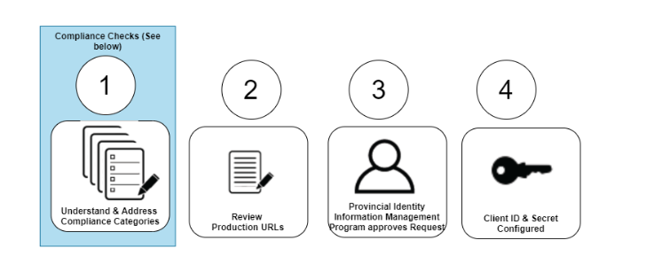
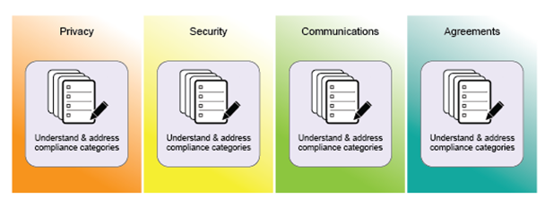
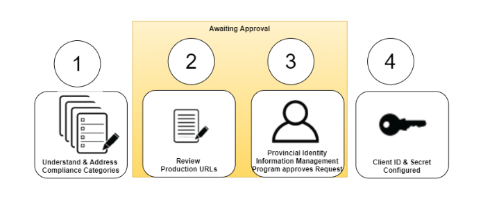
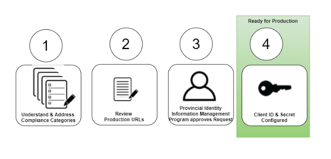

We call the activities in this step a Development Access Request.
Requesting a development Client ID and secret through the BC Services Card Self-Service application is designed to be free from barriers, enabling developers to easily access data within a protected development tier. This allows for a quick implementation of a proof of concept or a working model of the BC Services Card within a Broader Public Sector (BPS) application.

The request is placed in Draft Status as the Broader Public Sector (BPS) project team provides details on their project and selects the Open ID Connect (OIDC) scope/data attributes package.
After you’ve logged in to the Self-Service application, the request is placed in Draft Status. When in Draft Status, the Broader Public Sector (BPS) team gathers and provides details on their project and selects the Open ID Connect (OIDC) scope/package.

In order to obtain the Open ID Connect (OIDC) Client ID and Client Secret, the Broader Public Sector (BPS) team member submits the request moving it from Draft to Development status.
The Development Status lets the BPS team experiment through an integration in a BC Services Card test environment with fictitious BC Services Card data.

After successful experimentation, if BPS team wants to pursue an integration with real citizen BC Services Cards, a BPS team member triggers a promotion of the project’s Development Access Request into a Live Access Request.
When the BPS team has completed their development testing with the encryption, identity data package and test URLs set, there is an opportunity for the BPS to explicitly indicate through press of a button the process to initiate “Request Live Access”. At this point, the BPS project’s Development Access Request has now turned into a Live Access Request.

To keep things simple, we’re asking each BPS for the contact information of three types of team members:
· A developer, who uses the Client ID and secret details to configure the OpenID Connect (OIDC) configuration for the BPS online service;
· A manager, who will be involved in the end to end Live Access Request Process. This person works with both the development and executive team;
· An executive sponsor, who has the accountability and authority to sign off on privacy documents, security documents and service agreements.
The Live Access Request process is designed to enable Broader Public Sector (BPS) teams to work at their own pace to understand and address the various categories of compliance before integrating with a live production-ready environment of BC Services Card data. A member of the Provincial Identity Information Management (IDIM) Program is always available to help BPS clients in completing the integration components.
 Compliance Check Status:
Compliance Check Status:Before any Live Access Open ID Connect (OIDC) technical details are provided to the BPS team, a series of checks and balances are needed to provide the IDIM program with confidence to support the BPS team’s use of the BC Services Card integration. The IDIM Program is mandated to provide identity and authentication services using the BC Services Card to support citizen transactions with government services.
The transition into Compliance Check Status begins once the BPS provides information for any one compliance category.
By providing information, the BPS team is ready to initiate the compliance process to integrate the BC Services Card Log In mechanism with the BPS online service. The method of compliance is through an approval and attestation model. The BPS manager approves the checklist items in a specific compliance section and subsequently the BPS Executive Sponsor attests to each of the checklist items in the compliance section.

Compliance categories include: Privacy, Security, Communications, and Information Sharing Agreements. Based on the BPS organization’s timeline and resources, each of the categories can be done in parallel, they don’t need to happen sequentially. Once all of the categories have been attested to, the live access request goes to the next status where IDIM will review the request.

At anytime in the live access request, the BPS can update the production URLs to be used. The technical configuration of their development access request is the basis of the live access request. Note that the Team, Data Scope, Encryption and Signature Algorithms will not be changeable for the live access request.
Once the BPS project has all the compliance checks completed and production URLs submitted, the status of the request moves into Awaiting Approval Status. The Client Relationship Associate within IDIM will be informed that the BPS request is ready to proceed with the production integration of BC Services Card.
The IDIM Client Relationship Associate will engage with the BPS team as necessary and when satisfied will request the IDIM Executive Director to approve a “Go” decision for the BPS project.
[FOR IDIM TEAM ONLY INFO] The IDIM Client Relationship Associate triggers the status by “requesting IDIM Executive” button approval.
The BPS team will be notified once IDIM approval has been granted and that IDIM is in support the BPS production deployment i.e. Ready for Production. The BPS will be informed obtain the Client ID and Secret from the Self Service Application and use within the BPS production application.
